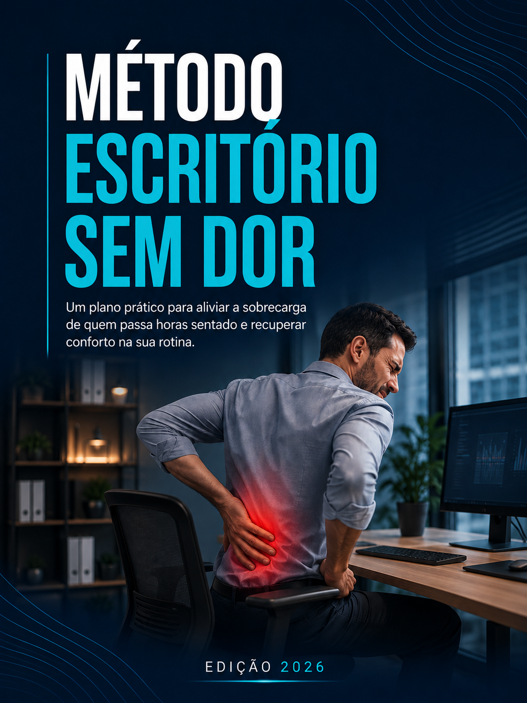

Um plano prático de um ajuste por dia para reorganizar sua estação de trabalho, variar posições e reduzir a sobrecarga de quem passa o dia inteiro na frente do computador.
Acesso imediato por e-mail • Leitura no celular • Garantia incondicional de 07 dias
O problema pode não ser a sua cadeira
O pescoço já está rígido.
Você nem percebe mais como está sentado.
Levantar da cadeira virou um esforço.
A maioria tenta resolver isso com um vídeo de alongamento salvo no Instagram, ou comprando uma cadeira mais cara. E continua terminando o expediente do mesmo jeito. O Método Escritório Sem Dor ataca a rotina inteira: um ajuste por dia, em missões que cabem no seu expediente real.
Termina a tarde com a lombar pesada e a sensação de corpo travado.
Já assistiu vídeos soltos de alongamento, mas nunca virou rotina.
Percebe o ombro subindo perto do prazo, e só relaxa quando lembra.
Almoça na frente do computador quase todo dia, mesmo sabendo que não deveria.
Fica horas sem levantar da cadeira e nem sente o tempo passar.
Desconfia que o monitor, a cadeira ou a mesa estão errados, mas não sabe o que ajustar primeiro.
Chega em casa e a única vontade é deitar.
Nada disso é preguiça. É a consequência de uma rotina que ninguém te ensinou a organizar.
O mecanismo
de posição antes do corpo pedir, ajustando encosto, altura e apoio ao longo do dia.
com micropausas curtas e movimentos leves que cabem entre uma reunião e outra.
onde, quando e em qual tarefa o desconforto aparece, para parar de agir no escuro.
Tentar mudar tudo numa segunda-feira é exatamente o que já não funcionou antes.
Saber exatamente o que ajustar primeiro, sem gastar nada, usando o que já tem em casa.
Parar de depender de força de vontade: cada micropausa é ancorada em algo que já acontece no seu dia.
Identificar qual tarefa específica está mais associada ao seu desconforto — e adaptar aquela tarefa.
Montar um home office funcional em três níveis, do orçamento zero à estrutura completa.
Ter 15 movimentos leves ilustrados passo a passo, com execução e quando interromper.
Reconhecer os sinais que pedem avaliação profissional, em vez de se autodiagnosticar na internet.
Ter um registro do seu padrão e, no Dia 15, enxergar preto no branco o que mudou.
Terminar com um plano de continuidade semanal, para não virar mais um começo abandonado.

E-book O Método Escritório Sem Dor — plano completo de 15 dias, otimizado para celular (R$ 97)
Bônus 1: Biblioteca de 15 Movimentos Leves — passo a passo, adaptação mais fácil e quando parar (R$ 47)
Bônus 2: Checklist da Estação de Trabalho — uma página para imprimir e deixar na mesa (R$ 27)
Bônus 3: Mapa do Desconforto — registro de onde, quando e em qual tarefa aparece (R$ 27)
Bônus 4: 4 Rotinas Prontas — home office, escritório, notebook e +10h no computador (R$ 47)
Cartão ou Pix • Acesso imediato após a confirmação
Você tem tempo de fazer o método inteiro, comparar o diagnóstico do Dia 1 com o do Dia 15, e ainda tem 07 dia de garantia. Se não fizer sentido para a sua rotina, pede o reembolso e recebe 100% do valor de volta, sem justificativa e sem perguntas.
O risco fica conosco. Você só fica com o que aplicou.
A diferença é se vai estar sentado do mesmo jeito, no mesmo horário, sentindo a mesma coisa às seis da tarde. Ou se vai ter passado esses quinze dias observando, ajustando e montando um sistema que trabalha a seu favor durante todo o expediente.
Não é sobre virar especialista em ergonomia. É sobre parar de trabalhar contra o próprio corpo dez horas por dia sem perceber.
PRECISO DISSO!Acesso imediato • Garantia incondicional de 07 dias
SE POR QUALQUER MOTIVO VOCÊ ACHAR QUE O MATERIAL NÃO É PRA VOCÊ, BASTA SOLICITAR O REEMBOLSO E RECEBA O SEU INVESTIMENTO DE VOLTA.